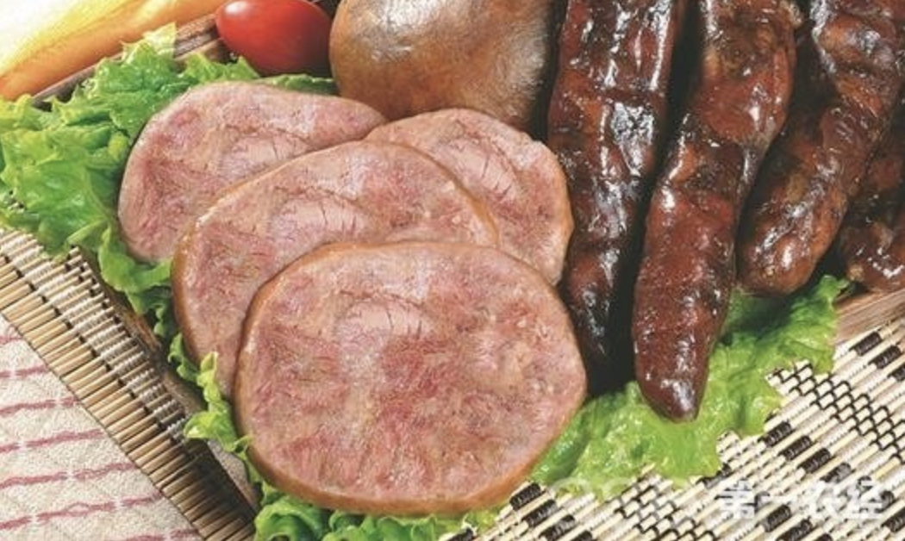

山东菏泽东明县特产：东明香肚
发布时间: 2016-03-15 459 次浏览
-
东明香肚因原产地为东明县而得名，是菏泽市的特产之一。老少皆宜，是当地的传统特色名小吃之一，已拥有百年历史。2006年被评为“指定地方名吃”。东明香肚是山东省菏泽市东明县的特产。东明香肚，又称粉肚。是本县“靳家老店”的传统名吃。浓香适口、香而不腻、风味独特、色泽纯正、营养丰富、老少皆宜、令人百吃不厌，回味无穷。
靳家粉肚店于清光绪末年由靳家先人靳富山创立，至今已有百年历史。粉肚以80%瘦猪肉、20%的绿豆粉为原料，加盐及砂仁、花椒、香油等数十种佐料拌合，装入猪膀胱中系口，然后放到加水的锅里，先大火后文火慢慢煮熟即成。该产品切开后，色泽鲜艳，浓香扑鼻，香而不腻，老少皆宜，深受人们喜爱，成为东明地方名吃。靳家后人及其亲戚李家又在传统工艺的基础上加以改进，其产品更负盛名，常常供不应求。1993年，被国家、省、市先后评为“菏泽市地方名吃”、“中华名吃”、“山东省名优新特产品”。被省政府列入“政府采购肉食指南”，2005年被市卫生局评为“安全卫士食品”，2006年，被国际菏泽牡丹花会评为“指定地方名吃”。东明香肚做法
腌制
在腌制猪膀胱前，先除去外部附着的筋络和脂肪。然后每80个猪膀胱用盐1公斤分2次擦腌：第1次用2/3的盐均匀擦猪膀胱的内外面，擦后放入缸中或罐内，盖上盖腌制；10天后再用剩下的1/3盐进行第2次擦腌，擦后再放入缸中腌制。3个月后，从盐卤中取出猪膀胱，每只再用盐25克搓揉腌制，然后放入蒲包中晾挂。这样处理可去掉膀胱的臊味，并使其质地柔软，弹性增强。在装馅前，再内外洗涤6次，以彻底消除污物与残留的臊味。经过以上处理的猪膀胱即成为可装肉馅的肚皮。
配料
切成5厘米长、筷子粗的瘦猪肉35公斤，肥猪肉15公斤，食盐和白糖各2.5公斤，用八角4份、花椒2份、桔皮1份研粉焙黄制成的混合香料75克，硝石30克。
灌肚
先将切好的肉条拌入食盐、硝石和香料中静置半小时后，再加入白糖搅拌均匀，15分钟后即可装肚。灌肚时，用台秤将配制好的肉馅，按照200、250克等不同标准称好，一份一份堆放在大搪瓷盆中，然后装肚。装肚方法是：手拿肚皮，用两只手的中指与大拇指捏住肚皮的边缘，使之外翻，让肚皮口张开，接着把肉馅装入肚皮内；再用手握住装好的肚皮上部，在桌面上轻轻按揉，将肚皮中的空气排出，然后用竹签头封口，最后用细绳打一活扣，套在香肚的上部与竹签的一端，用力拉紧，使肚口收缩，并砍去竹签的一段，这时一个小肚就脱离竹签，封口处仅剩余一段绳头。按照上述方法可再灌第2个。当第2个香肚灌好封口后，也砍去一段竹签，这样一根绳的两头就扎住了两个小肚。
晾晒
将装好的香肚放在阳光下晒2～3天后，再晾挂在通风干燥的房间里3～4个月。之后，将小肚按每4个1组扎在一起，一层层摆入缸内。入缸后按100只小肚用香油1公斤淋上香油，并进行搅拌，使小肚外表都涂上一层香油，最后盖好缸盖。以后随取随用，可保鲜防变质。
黄河文化旅游宣传平台
联系电话: 17753010787
版权所有：山东大学技术团队
技术支持：山东大学技术团队